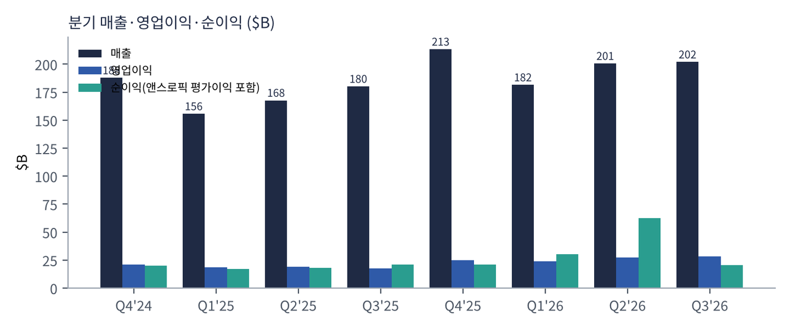
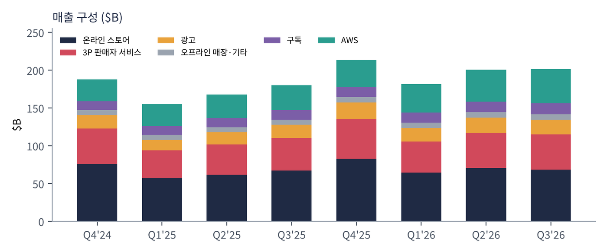
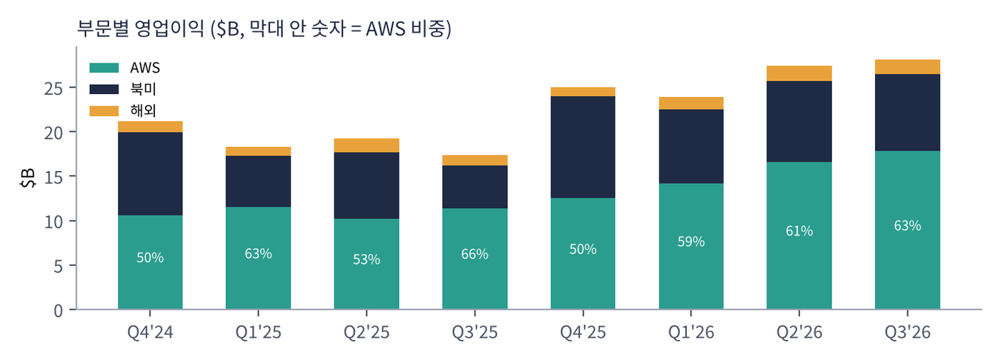
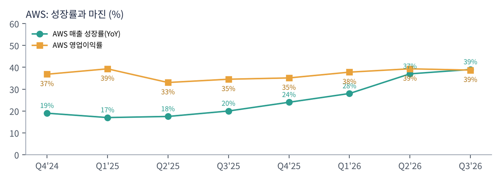
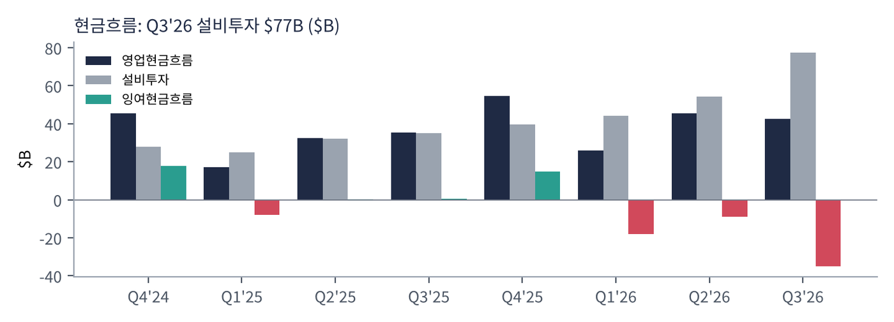
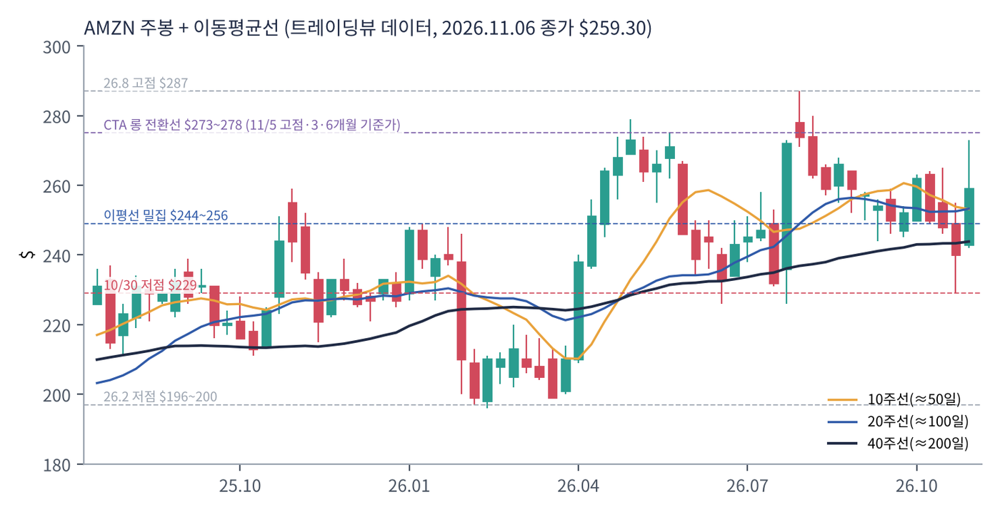
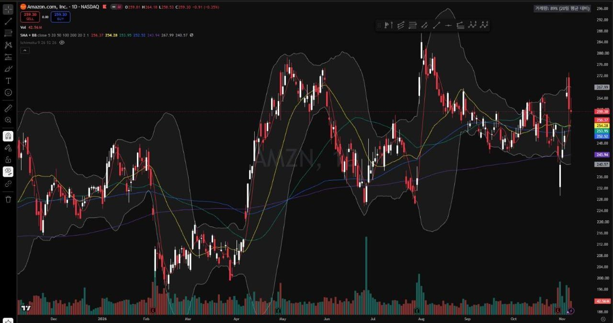

아마존은 세계 최대 온라인 유통·물류 회사이자 세계 최대 클라우드(AWS) 회사다. 여기에 광고(유통 플랫폼 위 검색 광고·프라임 비디오 광고), 구독(프라임), 식료품·약국·위성인터넷(아마존 레오)·자율주행(죽스)까지 사업을 넓혔다.
| 항목 | 내용 |
|---|---|
| 종목 | Amazon.com, Inc. (AMZN) · 인터넷 유통 · 1994년 설립 · 본사 시애틀 |
| CEO | 앤디 재시 (사장 겸 CEO) |
| 시가총액 | $2.80T (11/6 종가 기준) |
| 최근 분기(Q3'26) | 매출 $201.9B, 영업이익 $28.1B, 순이익 $20.7B, EPS $1.89 |
| 밸류에이션 | TTM PER 19.9배 (앤스로픽 지분 평가이익 포함) |
| 배당 | 없음 |
| 분기 | 매출 | YoY | 영업이익 | 이익률 | 순이익 | EPS | AWS 매출 | AWS 성장 |
|---|---|---|---|---|---|---|---|---|
| Q4'24 | $187.8B | +10% | $21.2B | 11.3% | $20.0B | $1.86 | $28.8B | +19% |
| Q1'25 | $155.7B | +9% | $18.4B | 11.8% | $17.1B | $1.59 | $29.3B | +17% |
| Q2'25 | $167.7B | +13% | $19.2B | 11.4% | $18.2B | $1.68 | $30.9B | +17.5% |
| Q3'25 | $180.2B | +13% | $17.4B | 9.7% | $21.2B | $1.95 | $33.0B | +20% |
| Q4'25 | $213.4B | +14% | $25.0B | 11.7% | $21.2B | $1.95 | $35.6B | +24% |
| Q1'26 | $181.5B | +17% | $23.9B | 13.2% | $30.3B | $2.78 | $37.6B | +28% |
| Q2'26 | $200.6B | +20% | $27.5B | 13.7% | $62.6B | $5.75 | $42.2B | +37% |
| Q3'26 | $201.9B | +12% | $28.1B | 13.9% | $20.7B | $1.89 | $46.0B | +39% |
연간: 2025년 매출 $716.9B. 순이익에는 앤스로픽 지분 평가이익이 포함된다(Q3'25 $9.5B, Q1'26 $16.8B, Q2'26 영업외수익 $53.4B 대부분). Q3'25 영업이익에는 FTC 합의금 등 일회성 비용, Q4'25에는 이탈리아 세금 분쟁·구조조정·매장 손상 등 특별 비용 $2.4B가 포함됐다.

순이익보다 영업이익을 봐야 한다. 2026년 2분기 순이익 $62.6B는 대부분 앤스로픽 지분 평가이익이다. 사업 실력인 영업이익은 $17~21B대에서 $28B대로 꾸준히 올랐고, 영업이익률은 10% 안팎에서 14% 가까이 올라섰다. 유통 회사로서는 이례적인 수준이다.

| 매출원 ($B) | Q4'24 | Q1'25 | Q2'25 | Q3'25 | Q4'25 | Q1'26 | Q2'26 | Q3'26 | YoY |
|---|---|---|---|---|---|---|---|---|---|
| 온라인 스토어 | 75.6 | 57.4 | 61.5 | 67.4 | 83.0 | 64.3 | 70.4 | 68.5 | +2% |
| 3P 판매자 서비스 | 47.5 | 36.5 | 40.3 | 42.5 | 52.8 | 41.6 | 46.8 | 46.5 | +9% |
| 광고 | 17.3 | 13.9 | 15.7 | 17.7 | 21.3 | 17.2 | 19.8 | 19.6 | +11% |
| 구독 | 11.5 | 11.7 | 12.2 | 12.6 | 13.1 | 13.4 | 13.7 | 14.0 | +11% |
| 오프라인 매장 | 5.6 | 5.5 | 5.6 | 5.6 | 5.9 | 5.8 | 5.8 | 5.7 | +2% |
| AWS | 28.8 | 29.3 | 30.9 | 33.0 | 35.6 | 37.6 | 42.2 | 46.0 | +39% |
기타 매출 생략. Q3'26 온라인 스토어·광고 성장률은 프라임데이가 Q2로 옮겨간 영향(Q3 전체 성장률 약 4%p 감소)을 받았다. 회사는 Q4 광고 성장률을 10%대 후반으로 제시했다.

| 영업이익 ($B, 이익률) | Q4'24 | Q1'25 | Q2'25 | Q3'25 | Q4'25 | Q1'26 | Q2'26 | Q3'26 |
|---|---|---|---|---|---|---|---|---|
| 북미 | 9.3 8.0% | 5.8 6.3% | 7.5 7.5% | 4.8 4.5% | 11.5 9.0% | 8.3 8.0% | 9.1 7.8% | 8.7 7.7% |
| 해외 | 1.3 3.0% | 1.0 3.0% | 1.5 4.1% | 1.2 2.9% | 1.0 2.0% | 1.4 3.5% | 1.7 4.0% | 1.6 3.7% |
| AWS | 10.6 36.9% | 11.5 39.3% | 10.2 33.0% | 11.4 34.6% | 12.5 35.1% | 14.2 37.8% | 16.6 39.3% | 17.8 38.7% |

| 분기 | 무슨 일이 있었나 |
|---|---|
| Q4'24 | 연말 성수기 매출 $187.8B(+10%), AWS +19%. 영업이익 $21.2B. |
| Q1'25 | AWS 성장 17%로 둔화 — '아마존이 클라우드 AI 경쟁에서 뒤처진다'는 우려가 가장 컸던 시기. 순현금흐름 마이너스. |
| Q2'25 | 매출 +13%로 회복. AWS 이익률 33%로 최저(감가상각 증가). |
| Q3'25 | AWS +20%로 재가속 시작. FTC 합의금 등으로 북미 이익률 4.5%. 앤스로픽 평가이익 $9.5B. |
| Q4'25 | 매출 $213.4B(+14%), AWS +24%. 특별 비용 $2.4B 제외 시 영업이익 $27.4B. 2025년 매출 $716.9B. |
| Q1'26 | 매출 +17%, AWS +28%, 영업이익률 13.2%. 앤스로픽 평가이익 $16.8B로 순이익 $30.3B. |
| Q2'26 | 매출 +20%(프라임데이 앞당김 효과), AWS +37%로 18분기 만에 최고 성장, 영업이익 +43%. 영업외수익 $53.4B로 순이익 $62.6B. |
| Q3'26 | 매출 +12%(프라임데이 이동 제외 약 +16%), AWS +39%, 영업이익 $28.1B(+61%). 분기 설비투자 $77.3B로 급증. |

| 현금흐름 ($B) | Q4'24 | Q1'25 | Q2'25 | Q3'25 | Q4'25 | Q1'26 | Q2'26 | Q3'26 |
|---|---|---|---|---|---|---|---|---|
| 영업현금흐름 | 45.6 | 17.0 | 32.5 | 35.5 | 54.5 | 26.0 | 45.4 | 42.4 |
| 설비 구매액 | 27.8 | 25.0 | 32.2 | 35.1 | 39.5 | 44.2 | 54.2 | 77.3 |
| 단순 FCF | 17.8 | -8.0 | 0.3 | 0.4 | 14.9 | -18.2 | -8.8 | -34.8 |
단순 FCF = 영업현금흐름 - 설비 구매액(매각 대금·보조금 차감 전). 회사 정의 FCF는 최근 12개월 -$42.4B.
최근 12개월 영업현금흐름은 $168.3B(+29%)로 사상 최대지만, 설비 구매가 1년 새 약 $95B 늘어 FCF가 마이너스로 돌아섰다. 회사는 증가분이 주로 AI 투자라고 밝혔다. Q3'26 한 분기 설비투자 $77B는 마이크로소프트(약 $45B)·알파벳($51B)보다 크다.
| 항목 | 회사 가이던스 |
|---|---|
| 매출 | $240.0~247.0B (+12~16%), 환율 -0.6%p |
| 영업이익 | $28.5~33.5B (전년 $25.0B) |
| 광고 | 10%대 후반 성장 (Q3 +12% 고정환율) |
| 설비투자 | 2026년 현금 기준 약 $220B 유지 |
트레이딩뷰 AMZN 일봉 519개와 주봉으로 계산했다. 결론부터 말하면 실적은 좋아지는데 주가는 1년 내내 박스권($229~287)이며, 지금은 박스 한가운데서 이동평균선이 모두 겹친 '방향 결정 직전'이다.


위: 주봉 재구성 차트. 아래: 트레이딩뷰 일봉 캡처(작도 없이 이동평균선·볼린저밴드만 표시).
| 이동평균 | 값 | 종가 대비 | 해석 |
|---|---|---|---|
| 5일선 | $256.4 | +1.1% | 10/30 급락 후 회복 |
| 20일선 | $254.3 | +2.0% | 20·50·100일선이 $252~254에 겹침 — 방향성이 없다는 뜻 |
| 50일선 | $254.0 | +2.1% | |
| 100일선 | $252.5 | +2.7% | |
| 200일선 | $243.9 | +6.3% | 완만한 상승. 장기 추세는 아직 위쪽 |
모든 이평선이 주가 아래 $244~256의 좁은 구간에 모여 있다. 이런 '이평선 수렴'은 보통 큰 방향성 움직임을 앞둔 상태다. 11/5 고점($273)이 위쪽 문, 이평선 밀집대($244~256)가 아래쪽 문이다.
| 규칙 | 기준 | 현재 값 | 신호 |
|---|---|---|---|
| 장기 추세 필터 | 종가 vs 200일선 | $259.3 > $243.9 | 매수 |
| 중장기 교차 | 50일선 vs 200일선 | $254.0 > $243.9 | 매수 |
| 단기 교차 | 20일선 vs 50일선 | $254.3 ≈ $254.0 | 매수(경계선) |
| 돈키언 채널 | 55일 고가 $273.2 / 저가 $229.4 | 박스 중간 | 중립 |
| 1개월 모멘텀 | 21거래일 수익률 | +2.1% | 매수 |
| 3개월 모멘텀 | 63거래일 수익률 | -6.8% | 매도 |
| 6개월 모멘텀 | 126거래일 수익률 | -4.9% | 매도 |
| 12개월 모멘텀 | 252거래일 수익률 | +3.6% | 매수 |
| 종합 (8개 평균) | +0.38 | 약한 롱 / 중립 | |
해석: 추세추종 자금은 아마존에 큰 베팅을 하지 않고 있을 가능성이 크다. 장기 신호는 롱이지만 3·6개월 모멘텀이 마이너스라 신호가 상쇄된다. 거꾸로 말하면 박스를 벗어나는 순간 신호가 한쪽으로 쏠리며 추세 자금이 유입·이탈할 여지가 크다. 60일 변동성은 연 31.2%(ATR $9.0).
| 가격 | 무엇이 바뀌나 | 의미 |
|---|---|---|
| $273 ~ 278 | 55일 신고가 + 6개월(기준가 $272.7)·3개월(기준가 $278.1) 모멘텀 플러스 | 8개 신호가 모두 매수로 정렬 — 박스 상단 돌파 |
| $287 | 52주 신고가(2026.8.3) | 1년 박스 완전 돌파 |
| $250 ~ 254 | 1개월(기준가 $254.1)·12개월(기준가 $250.2) 모멘텀 마이너스 전환 + 이평선 이탈 | 신호가 매도 우위로 기욺 |
| $229 | 55일 신저가 | 박스 하단 이탈, 추세 자금 매도 |
| 구분 | 가격대 | 근거 |
|---|---|---|
| 저항 2 | $278 ~ 287 | 8월 고점권, 52주 최고가 |
| 저항 1 | $272 ~ 273 | 11/5 고점, 55일 최고가 |
| 지지 1 | $244 ~ 256 | 20·50·100·200일선 밀집 |
| 지지 2 | $229 | 10/30 실적 후 저점, 55일 최저가 |
| 지지 3 | $196 ~ 200 | 2026년 2~3월 저점 |
기본 판단: 박스권($244~273) 안에서 방향을 고르는 중이며, 펀더멘털은 위쪽을 가리킨다. AWS 가속과 영업이익 +61%는 상승 근거지만, FCF 마이너스와 $220B 설비투자는 주가를 누르는 무게다. 박스 하단 매수·상단 돌파 추가 매수의 2단계 전략이 적합하다.
| 가격대 | 시나리오 | 대응 |
|---|---|---|
| $287 이상 | 1년 박스 돌파 | 2차 익절 후 잔여 추세 추종 |
| $273 ~ 278 | 박스 상단 돌파 | 2차 진입(60%), 손절 $258 |
| $250 ~ 254 | 박스 하단 지지 | 1차 진입(40%) |
| $242 이하 종가 | 지지 실패 | 손절 |
| $229 / $200 | 하락 추세 | 관망 |
| 매출원 | 돈을 버는 방식 | Q3'26 | 비중 |
|---|---|---|---|
| 온라인 스토어 | 아마존이 직접 사서 파는 상품(1P) 매출과 디지털 미디어. 매출은 크지만 마진이 가장 얇다 | $68.5B | 34% |
| 3P 판매자 서비스 | 외부 판매자에게 받는 판매 수수료·풀필먼트(FBA, 아마존 창고 보관·배송) 수수료. 판매자의 물류를 대행하는 B2B 사업 | $46.5B | 23% |
| AWS | 서버·스토리지·데이터베이스·AI(베드록·트레이니엄) 사용료. 종량제 중심 | $46.0B | 23% |
| 광고 | 아마존 검색 결과의 스폰서 상품 광고, 프라임 비디오·트위치 광고, NFL·NBA 중계 광고 | $19.6B | 10% |
| 구독 | 프라임 회원비(배송+비디오+음악), 오디블, 킨들 언리미티드 등 | $14.0B | 7% |
| 오프라인·기타 | 홀푸드·아마존 프레시 매장, 기기 등 | $7.4B | 4% |
아마존의 진짜 수익 구조는 '플라이휠'이다. 유통(1P+3P)은 매출의 60%를 차지하지만 이익률은 한 자릿수다. 대신 유통이 모은 수억 명의 구매자와 판매자가 광고(고마진, 사실상 아마존 검색창 자리를 파는 사업)와 3P 수수료·프라임 구독을 만든다. 유통은 '고객을 모으는 장치', 광고·구독·수수료는 '그 고객으로 돈을 버는 장치'다. 그리고 완전히 별개의 엔진인 AWS가 회사 영업이익의 약 63%를 번다. 유통에서 번 돈과 AWS에서 번 돈이 다시 물류센터·데이터센터에 재투자되는 구조다.
재시 CEO는 Q3'26 발표문에서 매출 1조 달러짜리 사업이 지금까지 없었는데 아마존은 5~10년 안에 두 개(유통·AWS)를 가질 수 있다고 말했다. 2025년 유통 관련 매출은 약 $5천억 후반, AWS는 연 환산 $184B이므로, AWS가 연 40%씩 5년 성장하면 실제로 1조 달러에 근접한다는 계산이 깔린 발언이다.
아마존이 10-K 첫머리에 내거는 목표는 "지구에서 가장 고객 중심적인 회사"가 되는 것이고, 이를 위한 원칙으로 경쟁자보다 고객에 집착할 것, 발명에 대한 열정, 운영 탁월성, 장기적 사고를 든다. 최근 행동에서 읽히는 방향은 세 가지다.
정리하면, 아마존의 궁극적 목적은 "물리적 세계(물류·위성·자율주행)와 디지털 세계(클라우드·AI)의 인프라를 동시에 소유하고, 그 위를 지나가는 모든 거래에서 수수료를 받는 것"이다. 고객 중심이라는 표어 아래, 실제로는 세계에서 가장 넓은 '인프라 임대업자'가 되려 한다.
아마존은 콜 원고를 공개하지 않아 Q3'26 발표문의 CEO 발언·하이라이트·가이던스를 근거로 정리했다.
| 주제 | 경영진 코멘트 (요지) | 읽어야 할 포인트 |
|---|---|---|
| AWS 성장 전망 | Q3 39% 성장(연 환산 $184B), 2027·2028년 모두 40% 이상 성장을 예상 (재시) | 빅테크 중 가장 구체적이고 공격적인 장기 성장 수치 |
| AI 추론 수요 | 베드록 토큰 처리량 1년 새 약 17배, 포춘 500 기업 지출 약 7배 | 추론(inference) 수요의 폭발 |
| 고객 확대 | 메타, 엔비디아, 오픈AI, 세일즈포스, 오라클, 퀄컴, 버라이즌, NATO 등과 신규 AWS 계약 | AI 연구소부터 정부까지 고객 저변 확대 |
| 설비투자 | 2026년 현금 설비투자 약 $220B. 12개월 설비 구매 약 $95B 증가는 주로 AI 투자 | FCF 마이너스의 원인 |
| 유통 점유율 | 더 넓은 상품 구색과 빠른 배송으로 유통 점유율을 늘리며 마진도 개선 (재시) | 북미 이익률 7.7% |
| 광고 | Q3는 프라임데이 등 시기 요인으로 +12%(고정환율), Q4는 10%대 후반 성장 예상. AI 기반 '아마존 애즈 에이전트' 출시 | 광고가 유통의 고마진 엔진 |
| 소비 수요 | Q4 매출 가이던스 +12~16%. 연말 30만 명 이상 채용, 미국 물류 직원 최저 시급 $20 | 연말 소비 견조 전망 + 인건비 상승 |
| 신사업 | 식료품·약국·레오·죽스가 "고무적으로" 진행 (재시) | 아직 손익 기여는 비공개 |
| 부문 | 성장 동력 | AI 영향 | 자본 집약도 | 한 줄 평가 |
|---|---|---|---|---|
| 유통(1P·3P) | 배송 속도, 식료품, 구색 | 쇼핑 에이전트, 물류 로봇 | 높음(물류센터) | 고객을 모으는 장치, 마진 개선 중 |
| 광고 | 스폰서 상품, 스트리밍 광고 | AI 광고 에이전트 | 낮음 | 숨은 고마진 엔진 |
| 구독 | 프라임, 스포츠 중계 | 알렉사+ | 중간(콘텐츠) | 고객 묶어두기 |
| AWS | AI 추론·학습, 기업 이전 | 직접 수혜 | 매우 높음 | 이익의 63%, 성장 재가속 |
| 레오·죽스 | 위성·자율주행 | 피지컬 AI | 매우 높음 | 장기 옵션, 손익 비공개 |
"왜 실적은 좋아지는데 주가는 1년째 제자리인가?" 지난 1년 아마존의 영업이익은 $17B대에서 $28B대로 늘고 AWS는 두 배 빨라졌지만, 주가는 $229~287 박스에 갇혀 있다. 시장이 성장보다 현금흐름을 보고 있기 때문이다. 회사 정의 FCF가 1년 새 +$15B에서 -$42B로 뒤집혔다. 아마존은 '지금의 현금'을 포기하고 'AWS 40%+ 성장이 2028년까지 이어지는 미래'에 베팅했다.
이 베팅의 강점은 아마존이 AI 수요의 두 입구를 모두 가졌다는 것이다. 기업이 AI를 만들 때는 AWS로, 소비자가 AI로 쇼핑할 때는 알렉사·아마존 앱으로 들어온다. 약점은 투자 규모다. 2026년 설비투자 약 $220B는 세 빅테크 중 최대이며, 수요가 예상보다 일찍 꺾이면 감가상각 부담이 가장 크게 남는다.
출처: Amazon IR 분기 실적 발표문 Q4'25 ~ Q3'26(ir.aboutamazon.com, 부문·매출 그룹·현금흐름 표 포함), TradingView AMZN 차트·기술적 지표(2026.11.06 종가), TradingKey 보도(11/4 중간선거 후 기술주 반등, 아마존 +6%). 아마존의 목표·원칙은 회사 10-K의 고정 문구를 요약했다. 이 자료는 개인 학습용 분석이며 특정 종목의 매수·매도를 권유하지 않습니다. 모든 투자의 책임은 개인에게 있습니다.